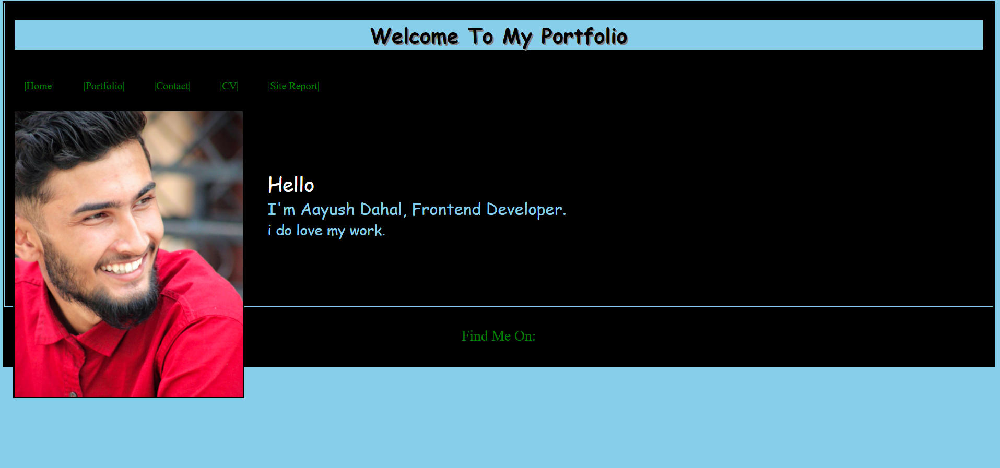
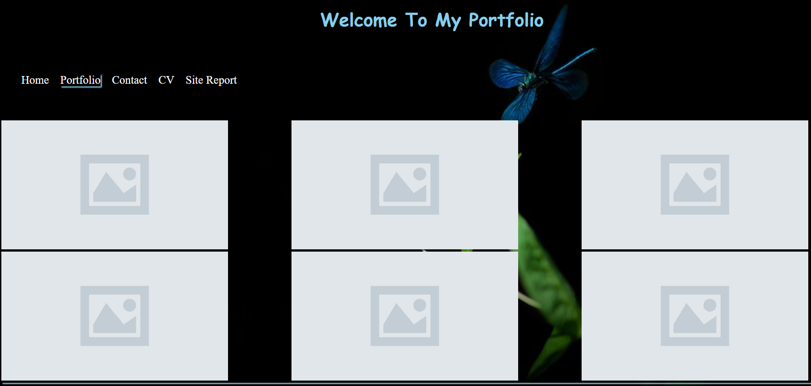
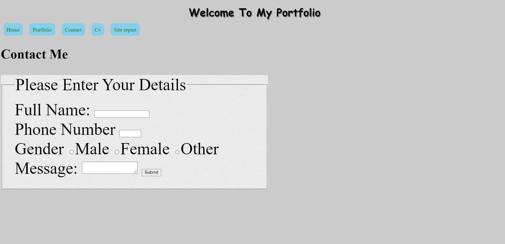
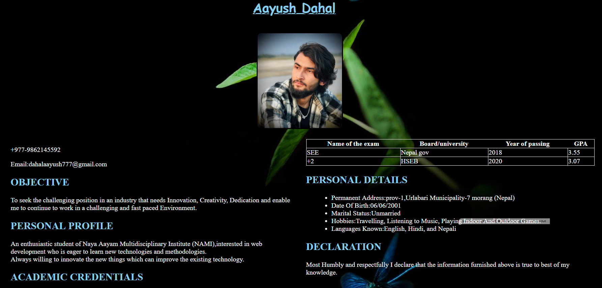

PORTFOLIO SITE REPORT
Submitted to:
Naya Aayam Multi-disciplinary Institute(NAMI)
By
Aayush Dahal
Under The Supervision Of
Ankit Thapa
Module Tutor,NAMI college
MAY
DECLARATION
Most humbly and respectfully I want to declare that the work here entitled "PORTFOLIO SITE FOR ASSIGNMENT PURPOSE" Submitted to NAMI College is my orginal work in the form of fulfilment of the requirement for the assignment web development (CSY1018), Term-1.
ACKNOWLEDGEMENT
A site called "Portfolio Site For Assignment Purpose" has been prepared to demonstrate the ability to make a five-page portfolio site.The portfolio site has been prepared as required by the assignment of web development (CSY1018).I want to express my sincere gratitude for the efforts that our module teacher (Ankit Thapa) took for us and helped to complete this assignment as well.I want to thank all my friends and family who, directly or indirectly, helped me complete my portfolio site.
Table Of Contents
- First Page
- Declaration
- Acknowledgement
- Introduction
- Objectives
- My Experience Of Learning The Basics Of Web Development
- Technical And Design Of Site
- Progress images and document
INTRODUCTION
An assignment was given to us to deveolop a portfolio site and write a site report.
OBJECTIVES
The main purpose of this assignment is to create a web page using HTML and CSS and manage our code using git hub.
My Experience Of Learning The Basics Of Web Development
The first phase of learning any new skill is always complicated and to tackle this step requires a lot of determination. Web Development was same for me.
Namaste, I am Aayush Dahal, and I am sharing my experience of learning web development.
The first step was to master some basic understanding of web development.The basics are always the most important concepts that should be clear and understood precisely. Coding, debugging and design is not that simple,it needs a lot of time and a lot of effort.I can tell it was a big challange for me.It was frustrating at the beginning.I used to work on the program for hours and was so excited to run it for the first time and try it out.
but the program didn't run.Then I had to go back and read it again to find the mistake I made. semicolon was missing.
With constant learning, I went through the provided slides and did some research on the internet as well. In this short study, I have learned many lessons from those ups and downs, and these lessons could be useful in the days to come.
I want to express my sincere gratitude for the efforts that our module teacher (Ankit Thapa) took for us and helped us grow.
Now, I feel very comfortable, It's fun learning this module.
Technical And Design Of Site
When I first received this assignment, I was very interested in it. Developing this portfolio website is my first web development experience. In the beginning, I encountered many difficulties in the design and the selection of colors. I tried using my own layout and design to show skills, but due to unsatisfactory results I worked overtime and changed it. The different changes to the layout, style, and color selection of the web page, is one of my best experiences in learning to make different labels, layouts, and styles.
Progress Images And Document
First Portfolio Site Images.




Updated Portfolio Site Images.


Screenshots OF HTML And CSS Validation.